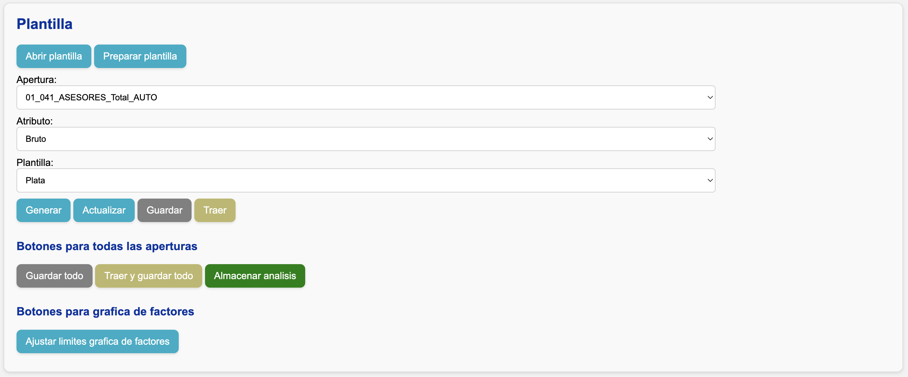

Preparar la plantilla
Después de la sección "Controles y cuadre de información", verá la siguiente sección:

- Presione el botón "Preparar plantilla".
-
El sistema realizará automáticamente:
- La consolidación de toda la información (extracciones, cargas manuales y cuadre contable si aplica).
- La creación y apertura de un nuevo archivo de Excel con el nombre que definió en los parámetros.
- La generación de una evidencia de consistencia entre los datos consolidados y los enviados a Excel, guardada en
data/controles_informacion.
¡Cuidado!
Si prepara una plantilla ya existente, los resultados de la hoja Resumen se borrarán. Para recuperar los resultados, use la función Traer y guardar o el versionamiento de OneDrive.
Si solo desea abrir una plantilla existente sin modificarla, utilice la función Abrir plantilla.
Consolidación de información
-
Si hizo cuadre contable, se usa:
- La información post-cuadre (
data/post_cuadre_contable). - Los archivos extraídos o cargados no incluidos en el cuadre.
- La información post-cuadre (
-
Si no hizo cuadre, se usan todos los archivos de extracción o carga manual.
La información consolidada se almacena en la carpeta data/consolidado.
Transformaciones adicionales
Los datos se convierten en formato de triángulos antes de enviarse a la plantilla. Esta versión procesada queda almacenada en data/processed.
Siniestros
- Triángulos: se generan bases de triángulos con ocurrencias en cuatro periodicidades (mensual, trimestral, semestral y anual).
- Para entremés: se generan bases de triángulos con ocurrencias en tres periodicidades (trimestral, semestral, anual) y desarrollo mensual, junto con una base mensual para el periodo en curso.
Primas y expuestos
Se crea una única base con las cuatro periodicidades posibles a partir de los datos mensuales. Para las periodicidades mayores a mensual, los datos se agregan así:
- Primas: Suma.
- Expuestos: Promedio.
Estructura de la plantilla
Hojas comunes
-
Resumen: Totales de siniestros, primas, y expuestos por apertura y ocurrencia. Incluye resultados actuariales (siniestralidad última, frecuencia última, severidad última) más comentarios, metodologías y criterios de estimación. Contiene únicamente información de siniestros típicos.
-
Atípicos: Igual que la hoja resumen, pero contiene únicamente información de siniestros atípicos.
-
Histórico: Igual que la hoja resumen, pero con información de procesos anteriores (leída desde la carpeta
output/resultados). Presenta una columna que indica el mes del cierre correspondiente (mes_corte) y el tipo de análisis (si fue triángulos o entremés). Contiene información de siniestros típicos y atípicos.
Nota
Estas hojas se generan automáticamente al preparar la plantilla. Las periodicidades de las aperturas corresponden a las especificadas en el archivo de segmentación.
Hojas para análisis de triángulos
-
Indexaciones: Permite definir vectores de indexación para la severidad, en caso de que se vaya a utilizar las metodologías de indexación por fecha de ocurrencia o por fecha pago. De lo contrario, se puede dejar vacía.
-
Frecuencia: Permite hacer análisis de triángulos de frecuencia, sea por pago o por incurrido.
-
Severidad: Permite hacer análisis de triángulos de severidad, sea por pago o por incurrido, y opcionalmente por una metodología de indexación por fecha de ocurrencia o fecha de pago.
-
Plata: Permite hacer análisis de triángulos de plata, sea por pago o por incurrido.
Hojas para análisis de entremés
-
Entremés: Tiene la misma estructura de la hoja Resumen, pero cuenta con columnas adicionales para estimar las diferentes metodologías del entremés.
-
Completar diagonal: Permite estimar la completitud de la diagonal y actualizar la siniestralidad última en función de cómo se viene desarrollando el entremés.
Funciones de la plantilla
Funciones por apertura
Estas funciones aplican exclusivamente a las hojas de análisis por apertura (Frecuencia, Severidad, Plata y Completar_diagonal).
Generar
Crea la estructura del análisis para la apertura/atributo seleccionados.
Actualizar
Actualiza los datos del triángulo al incio de la plantilla según la apertura/atributo seleccionados, sin modificar el resto de la estructura de la hoja.
Guardar
Almacena todos los parámetros definidos en la plantilla para la apertura y el atributo seleccionados. Esto incluye:
- Triángulo de exclusiones.
- Ventanas de factores de desarrollo.
- Tipo de factor seleccionado (promedio, mediana, promedio ponderado, etc.).
- Vector de factores seleccionados.
Además, en los casos de Frecuencia, Severidad y Plata, también se guardan:
- Tipo de metodología (pago o incurrido).
- Vector de ultimate (valores y fórmulas).
- Metodología por ocurrencia (Chain-Ladder, Bornhuetter-Ferguson o Indicador).
- Triángulo de factores de desarrollo (por si se decide modificar los factores de una o varias ocurrencias).
- Vector de indicador (relevante solo para metodologías Bornhuetter-Ferguson e Indicador).
- Columna de comentarios.
En el caso de Severidad, si se usa una metodología de indexación se guarda también el triángulo del vector de indexación.
Estos datos se almacenan en formato .parquet en la carpeta data/db.
Traer
Carga en la plantilla los parámetros almacenados previamente para la apertura y el atributo seleccionados. Es el inverso de la función Guardar.
Ajustar límites para gráfica de factores
Corrige los ejes cuando cambian periodos o alturas de la gráfica.
Funciones para todas las aperturas
Guardar fórmulas entremés
Guarda todas las fórmulas de la hoja Entremés comenzando desde la columna porcentaje_desarrollo_pago_bruto. Los datos se almacenan en formato .parquet dentro de la carpeta data/db.
Traer fórmulas entremés
- Prepara plantilla para actualizar los datos de las hojas Resumen, Atípicos, y Entremés.
- Se pegan las fórmulas previamente guardadas para la hoja Entremés, comenzando desde la columna porcentaje_desarrollo_pago_bruto.
Tip
Esta funcionalidad es útil para actualizar las cifras reales conservando los mismos criterios actuariales de estimación.
Guardar todo
Ejecuta la función "Guardar" para todas las aperturas en la plantilla y atributo seleccionados.
Traer y guardar todo
- Prepara plantilla para actualizar los datos de las hojas Resumen, Atípicos, y Entremés.
- Se ejecutan las funciones "Traer" y "Guardar" para todas las aperturas en la plantilla y atributo seleccionados.
Tip
Esta funcionalidad es útil para actualizar las cifras reales conservando los mismos criterios actuariales de estimación.
Almacenar análisis
Concatena la información contenida en las hojas Resumen y Atípicos, y guarda el resultado en la carpeta output/resultados. Ese archivo representa la estimación final de siniestralidad última.